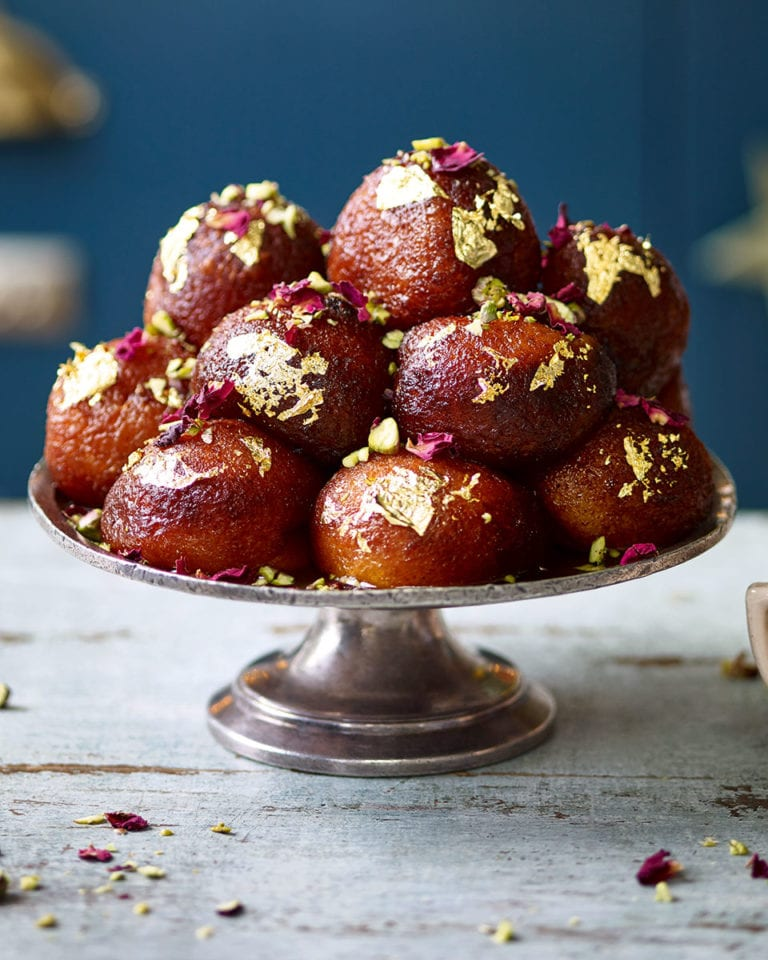
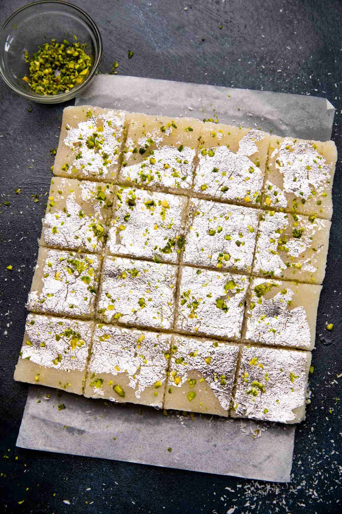

Gulab Jamun
Ingredients
- 1 cup milk powder
- 1/4 cup all-purpose flour
- 1/4 tsp baking soda
- 1/4 cup ghee
- 1/4 cup milk
- 1/4 cup curd
- 1/4 tsp cardamom powder
- 1/4 cup sugar
- 1/4 cup water
Recipe
- Take a bowl and add milk powder, all-purpose flour, baking soda, ghee, milk, curd, and cardamom powder. Mix it well and make a soft dough.
- Make small balls from the dough and keep it aside.
- Heat ghee in a pan and fry the balls on low flame until it turns golden brown.
- Take another pan and add sugar and water. Boil it until the sugar dissolves.
- Now add the fried balls in the sugar syrup and let it soak for 2 hours.
- Now Gulab Jamun is ready to serve.

Coconut Barfi
Ingredients
- 1 cup coconut
- 1/2 cup sugar
- 1/4 cup milk
- 1/4 cup ghee
- 1/4 tsp cardamom powder
- 1/4 cup cashew nuts
- 1/4 cup almonds
- 1/4 cup pistachios
Recipe
- Take a pan and add coconut, sugar, milk, and ghee. Mix it well and cook it on low flame.
- Add cardamom powder, cashew nuts, almonds, and pistachios.
- Mix it well and cook it until it thickens.
- Now pour the mixture into a greased plate and let it cool.
- Cut it into pieces and serve.

Rasmalai
Ingredients
- 1 liter milk
- 1/4 cup sugar
- 1/4 cup vinegar
- 1/4 cup water
- 1/4 tsp cardamom powder
- 1/4 cup almonds
- 1/4 cup pistachios
- 1/4 cup saffron
Recipe
- Take a pan and add milk. Boil it and add vinegar. Stir it well until the milk curdles.
- Now strain the curdled milk and wash it with water.
- Squeeze the water and make a dough. Make small balls from the dough.
- Take a pan and add sugar and water. Boil it until the sugar dissolves.
- Now add the balls in the sugar syrup and cook it for 10 minutes.
- Add cardamom powder, almonds, pistachios, and saffron.
- Now Rasmalai is ready to serve.